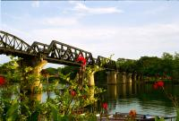

|
Vendredi 11 mai
Un bus climatisé confortable nous amène à Kanchanaburi, 130 km à l'Ouest de
Bangkok. Nous autres touristes venont ici pour voir un pont. Mais pas n'importe
quel pont. LE pont. Le pont de la rivière Kwai. Que d'histoire! Pendant la seconde
guerre mondiale, 30000 prisonniers alliés et 100000 travailleurs asiatiques
ont travaillé pour construire cette ligne de chemin de fer que les japonais
comptaient utiliser pour relier la Thaïlande à la Birmanie dans le but d'envahir
l'Inde. Des milliers y laissèrent leur vie. Il faut dire que sa construction
était prévue pour durer 5 ans et que les japonais (soutenu par la gouvernement
de Vichy) l'ont fait réaliser en 16 mois, torturant les prisonniers pour les
faire travailler plus dur encore. Aujourd'hui, il reste... un pont, assez banal,
un énorme parking pour les bus de touristes et des boutiques de souvenirs.
Kanchanaburi est une ville de taille moyenne, traversée par de grandes routes
où ça circule pas mal. Nous sommes installés dans un coin très tranquille, les
pieds dans l'eau puisque notre bungalow sur pilotis est construit au dessus
de la rivière (la fameuse) . C'est très reposant.
Samedi 12 mai
A 65 km au nord de Kanchanaburi, les plus belles cascades du Siam (l'ancien
nom de la Thaïlande): celles d'Erawan (ci-dessus). A nouveau nous nous plongeons
dans la jungle, accueillis par les cris des oiseaux et les multiples grésillements,
bruits de scierie (hé oui) et autres sons produits par les insectes et les divers
lézards. Il fait bien évidemment TRES chaud... Mais ce n'est pas sec. D'ailleurs
la Thaïlande est un pays très très vert, un peu comme la Normandie quoi... Il
y a 7 cascades qu'il faut remonter pendant environ 2 heures dans cette jungle
superbe. Sans rien boire... il s'agit d'un parc national et toute nourriture
et boisson est interdite au-delà de la deuxième cascade afin de préserver l'environnement.
Ca part d'un bon sentiment alors tant pis, on pique-nique en bas, avec les thaïlandais
en week-end, et on monte sans rien à boire. Les cascades sont géniales, toutes
différentes, avec des poissons dedans (dont certains font pas loin de 50 cm).
De nombreuses cuvettes sont creusées dans la roche, on peut s'y baigner, c'est
frais. Les thaïlandais font tous trempette. Les filles habillées, très rarement
en maillot de bain. Les singes sont là, dans les arbres. On s'en est aperçu
quand l'un d'eux a fait pipi sur ma casquette... pourrait pas viser ailleurs,
non! Je me suis baignée dans un des magnifiques bassins calcaires, profitant
du massage de la cascade et de la fraîcheur de l'eau. Bref, le bonheur, jusqu'à
ce que les poissons commencent à manger mes pieds! Quand on ne voit pas le fond,
ça fait tout drôle!
Suite du voyage : Nakhon Pathom
|

Thailande
Kanchanaburi
|
|
|